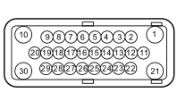

D079 TRANSMISSION SENSORS COUPLING (INJECTION BRIDGE / ENGINE SERVICES)
- Path
- Electrical equipment > 3 CONNECTORS > D INTERMEDIATE COUPLINGS > D079 TRANSMISSION SENSORS COUPLING > D079 TRANSMISSION SENSORS COUPLING (INJECTION BRIDGE / ENGINE SERVICES)
- Kind
- connector pinout (pin -> wire colour -> other end)
- Applies to
- engines: 2.2; all production periods; only with equipment: AUTOMATIC TRANSMISSION
- Interactive page
- https://sloeber94.github.io/elrnDB-fCrm/en/#/194005023
Applies to: engines: 2.2; all production periods; only with equipment: AUTOMATIC TRANSMISSION

Wiring | Colour |
|---|---|
_ |
Pin | Cable | Destination | |||
|---|---|---|---|---|---|
Sec.. | Colour | Node | Connect. | Pin | |
1 | 2 | N (black) | - | ||
2 | 0,5 | B (white) | - | ||
3 | 0,5 | N (black) | - | ||
4 | 0,5 | G (yellow) | - | ||
5 | 0,5 | LR (blue with red stripe) | - | ||
6 | 0,5 | GV (yellow with green stripe) | - | ||
7 | 0,5 | V (green) | - | ||
8 | 0,5 | H (grey) | - | ||
10 | 0,5 | BN (white with black stripe) | - | ||
11 | 0,5 | LG (blue with yellow stripe) | - | ||
12 | 0,5 | M (brown) | - | ||
13 | 0,5 | R (red) | - | ||
14 | 0,5 | L (blue) | - | ||
15 | 0,5 | GN (yellow with black stripe) | - | ||
16 | 0,5 | GN (yellow with black stripe) | - | ||
17 | 0,5 | BN (white with black stripe) | - | ||
18 | 0,5 | RN (red with black stripe) | - | ||
19 | 0,5 | CN (orange with black stripe) | - | ||
20 | 0,5 | LN (blue with black stripe) | - | ||
21 | 2 | B (white) | - | ||
22 | 0,5 | VR (green with red stripe) | - | ||
23 | 0,5 | VN (green with black stripe) | - | ||
24 | 0,5 | BV (white with green stripe) | - | ||
25 | 0,5 | CV (orange with green stripe) | - | ||
26 | 0,5 | GV (yellow with green stripe) | - | ||
30 | 0,5 | BR (white with red stripe) | - | ||